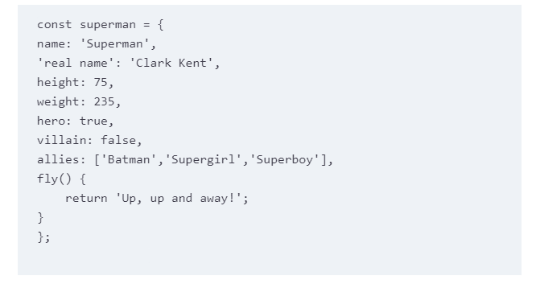
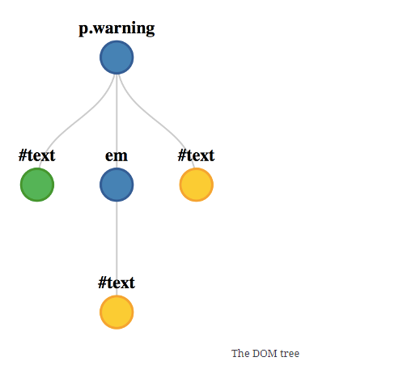

self-contained set of related values and functions
map to any JavaScript value such as strings, numbers, booleans, arrays and functions
code example

Creating objects
enter a pair of curly braces
also possible to create an object using a constructor function
not recommended though
Object methods
use dot or bracket notation
superman.fly()
the in operator can be used to check whether an object has a particular property
loop through all of an object’s properties and methods by using a for in loop
remember the built in objects!!
The Math object
contains all the typical mathematic functions
trig
logarithmic
random numbers
The Date object
const today = new Date();
today.toString();
output >>> 'Fri May 13 2022 19:08:34 MST+0100 (BST)'
getters and setters
The RegExp object
Regular Expression
pattern that can be used to search strings for matches to the pattern
Once you’ve created a regular expression object, you can use the test() method to see if a string (passed to the method as a parameter) matches the regular expression pattern.
It returns true if the pattern is in the string, and false if it isn’t.
DOM
Document Object Model
represents an HTML document as a network of connected nodes that form a tree-like structure.

all items are treated as nodes
All nodes have a numerical code to signify what type they are
Events
event listeners
Instead of the program having to constantly check to see if an event has occurred, the event listener will let it know when the event happens
if (click) {
doSomething();
} else {
// carry on with rest of the program
}